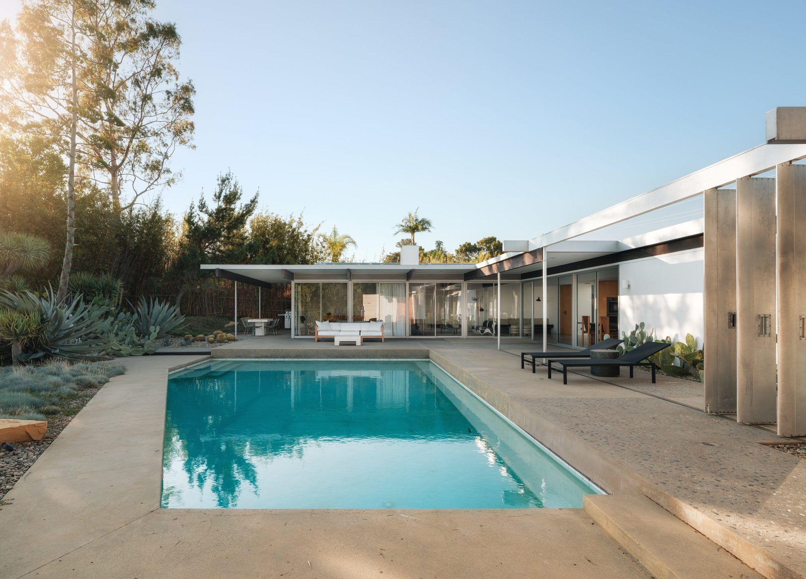

Plate IIn Escrow
954 Hillside Terrace
Ainsworth, Angel & McClellan
San Rafael, Pasadena
Photography by Matthew Momberger.
View the house Menu
Menu

Refined, confident, and focused on the client experience.
310.880.0582Photograph: Roger Davies. Courtesy of Weston James Group.
The Art of Representation
Weston James Group represents architecturally significant residences, private estates, and coastal properties throughout Los Angeles. With an appreciation for design and a distinct creative perspective, we approach each property through thoughtful storytelling, sophisticated marketing, and a level of presentation that reflects its individual character.
ICurrent Listings
All listingsPlate IIn Escrow
Ainsworth, Angel & McClellan
San Rafael, Pasadena
Photography by Matthew Momberger.
View the house
Plate IIFor Sale
Development site
Outpost Estates, Hollywood Hills
View the houseIINotable Sales
Our showcase
Plate IIISold
John Lautner
7436 Mulholland Drive, Hollywood Hills
Photograph: Roger Davies.
View the house
Plate IVSold
Richard Neutra
1705 Summitridge Drive
Photography by Matthew Momberger.
View the houseAs seen in

The rest of the homepage continues as live